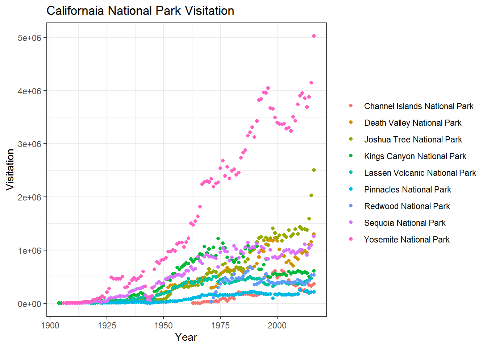
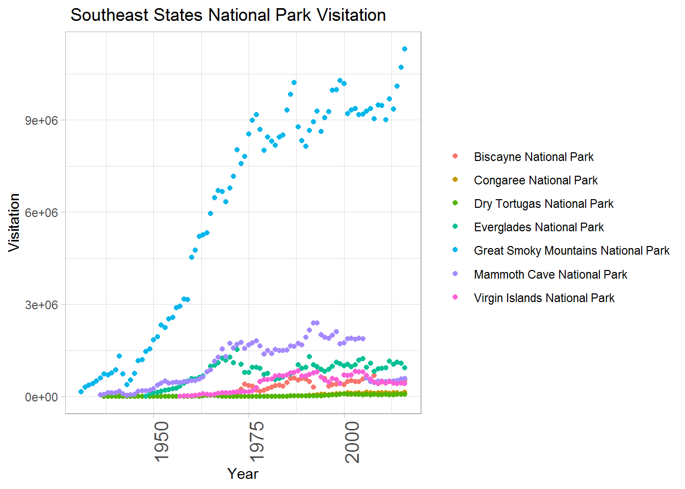
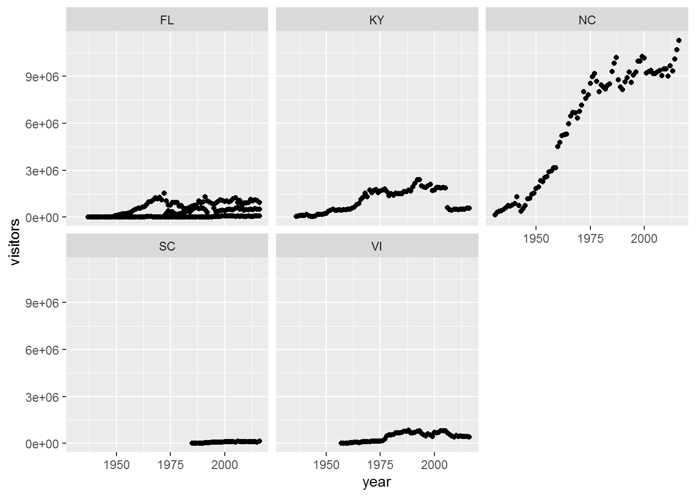
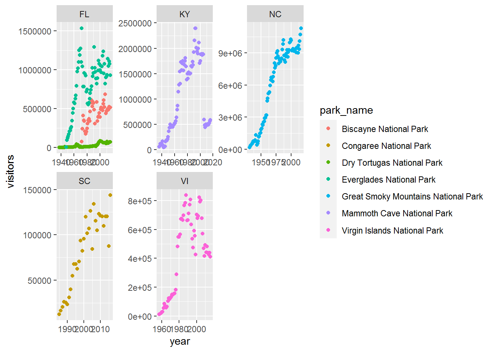
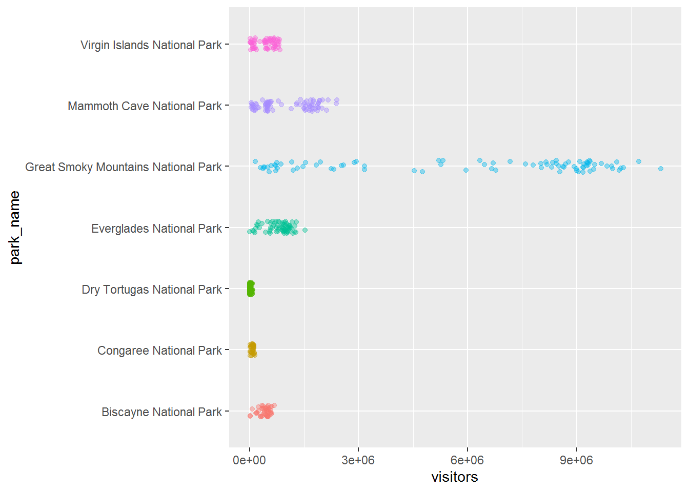
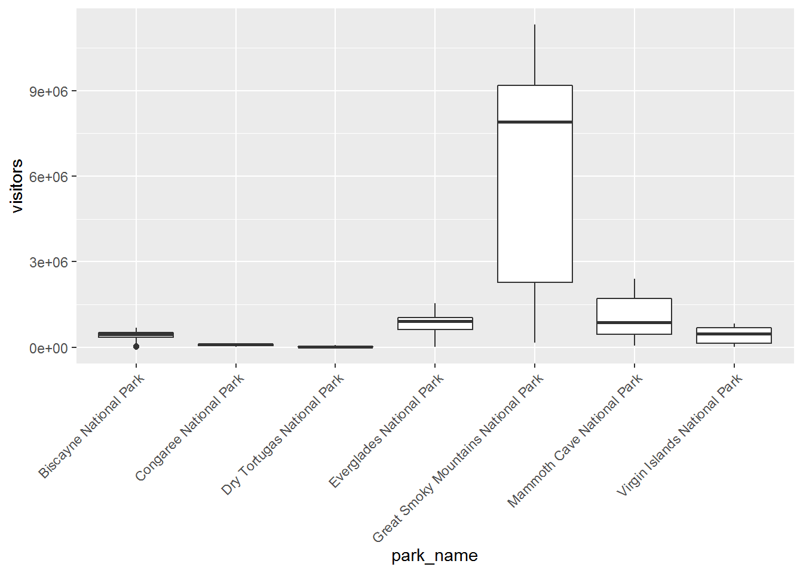
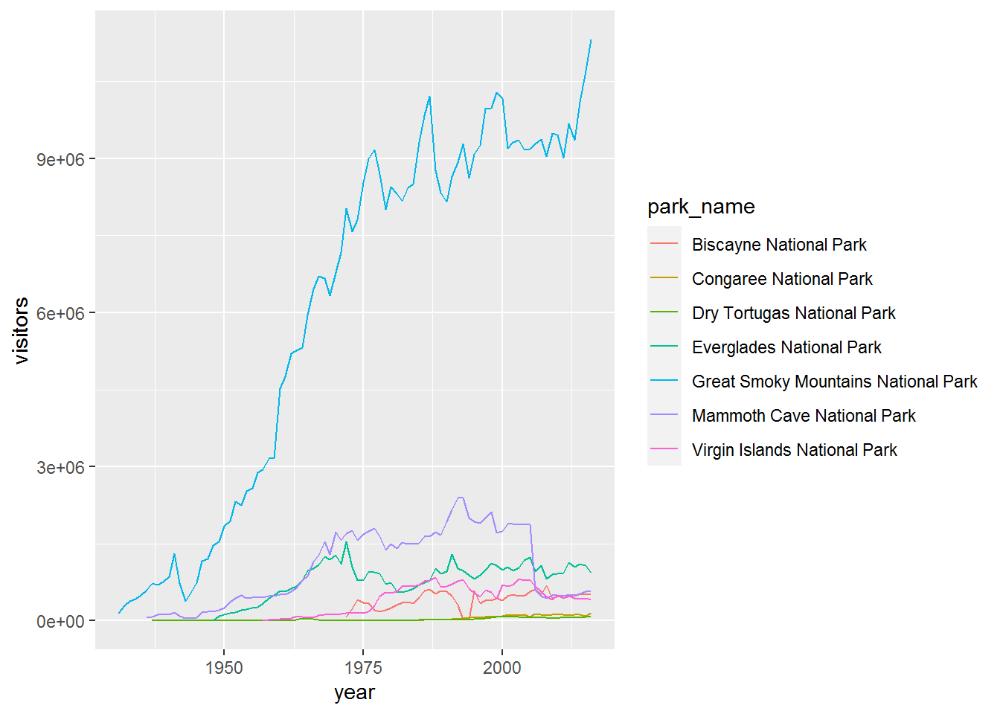
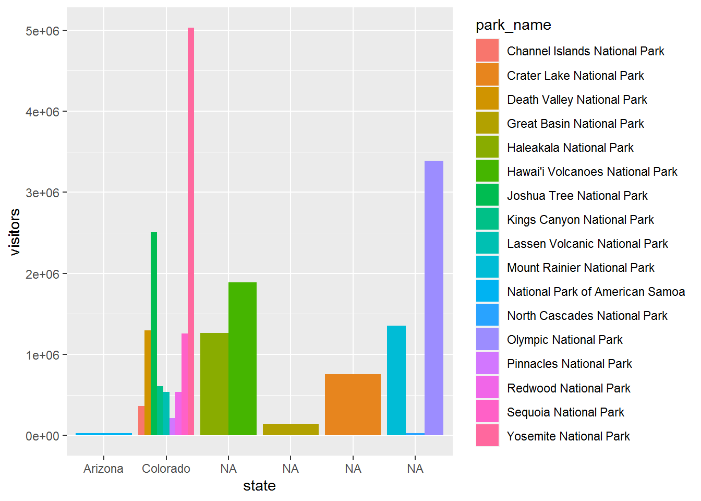
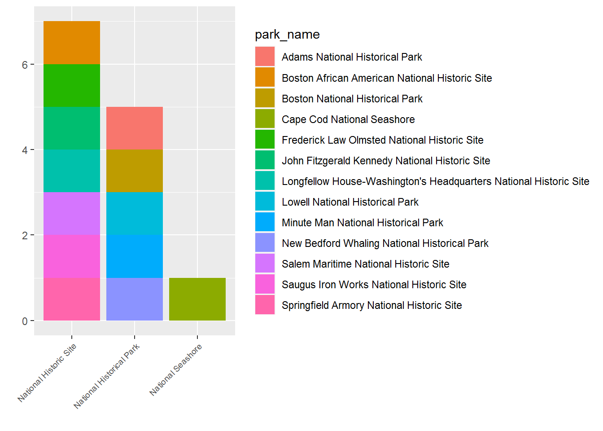
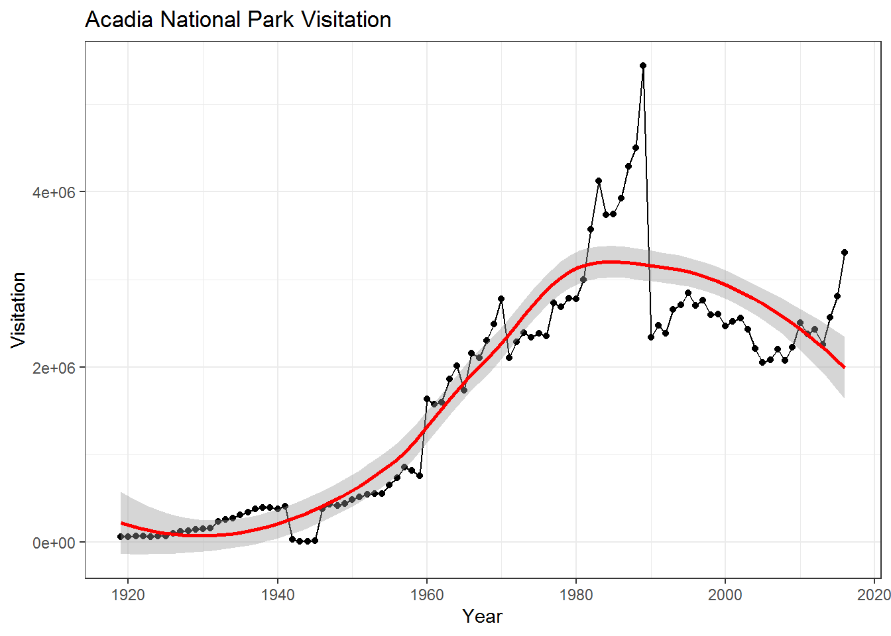

Graphics with ggplot2
Cheryl
11 April 2020
## ggplot2 do this everytime you start R
library(tidyverse)#National Parks in California
ca <- read_csv("https://raw.githubusercontent.com/OHI-Science/data-science-training/master/data/ca.csv") ## Parsed with column specification:
## cols(
## region = col_character(),
## state = col_character(),
## code = col_character(),
## park_name = col_character(),
## type = col_character(),
## visitors = col_double(),
## year = col_double()
## )#Acadia National Park
acadia <- read_csv("https://raw.githubusercontent.com/OHI-Science/data-science-training/master/data/acadia.csv")## Parsed with column specification:
## cols(
## region = col_character(),
## state = col_character(),
## code = col_character(),
## park_name = col_character(),
## type = col_character(),
## visitors = col_double(),
## year = col_double()
## )#Southeast US National Parks
se <- read_csv("https://raw.githubusercontent.com/OHI-Science/data-science-training/master/data/se.csv")## Parsed with column specification:
## cols(
## region = col_character(),
## state = col_character(),
## code = col_character(),
## park_name = col_character(),
## type = col_character(),
## visitors = col_double(),
## year = col_double()
## )#2016 Visitation for all Pacific West National Parks
visit_16 <- read_csv("https://raw.githubusercontent.com/OHI-Science/data-science-training/master/data/visit_16.csv")## Parsed with column specification:
## cols(
## region = col_character(),
## state = col_character(),
## code = col_character(),
## park_name = col_character(),
## type = col_character(),
## visitors = col_double(),
## year = col_double()
## )#All Nationally designated sites in Massachusetts
mass <- read_csv("https://raw.githubusercontent.com/OHI-Science/data-science-training/master/data/mass.csv")## Parsed with column specification:
## cols(
## region = col_character(),
## state = col_character(),
## code = col_character(),
## park_name = col_character(),
## type = col_character(),
## visitors = col_double(),
## year = col_double()
## )Building my plot
head(ca)## # A tibble: 6 x 7
## region state code park_name type visitors year
## <chr> <chr> <chr> <chr> <chr> <dbl> <dbl>
## 1 PW CA CHIS Channel Islands National P~ National P~ 1200 1963
## 2 PW CA CHIS Channel Islands National P~ National P~ 1500 1964
## 3 PW CA CHIS Channel Islands National P~ National P~ 1600 1965
## 4 PW CA CHIS Channel Islands National P~ National P~ 300 1966
## 5 PW CA CHIS Channel Islands National P~ National P~ 15700 1967
## 6 PW CA CHIS Channel Islands National P~ National P~ 31000 1968ggplot(data = ca) +
geom_point(aes(x = year, y = visitors, color = park_name)) + #add colour
labs( x = "Year",
y = "Visitation",
title = "Californaia National Park Visitation") + #Add title, change plot background
theme_bw() +
theme(legend.title = element_blank())
Exercise for SE parks dataset
head(se)## # A tibble: 6 x 7
## region state code park_name type visitors year
## <chr> <chr> <chr> <chr> <chr> <dbl> <dbl>
## 1 SE FL BISC Biscayne National Park National Park 78147 1972
## 2 SE FL BISC Biscayne National Park National Park 243100 1973
## 3 SE FL BISC Biscayne National Park National Park 409700 1974
## 4 SE FL BISC Biscayne National Park National Park 351500 1975
## 5 SE FL BISC Biscayne National Park National Park 339100 1976
## 6 SE FL BISC Biscayne National Park National Park 205900 1977ggplot(data = se) +
geom_point(aes(x = year, y = visitors, color = park_name)) +
labs( x = "Year",
y = "Visitation",
title = " Southeast States National Park Visitation") +
theme_light()+
theme(legend.title = element_blank(),
axis.text.x = element_text(angle = 90, hjust = 1, size = 14 ))
faceting to split one plot into multiple plots
ggplot(data = se) +
geom_point(aes(x = year, y = visitors)) +
facet_wrap(~state)
make the faceted plot split further by park
ggplot(data = se)+
geom_point(aes(x = year, y = visitors, color = park_name))+
facet_wrap(~state, scales = "free")
Geoms
#geomjitter
ggplot(data = se) +
geom_jitter(aes(x = park_name, y = visitors, color = park_name),
width = 0.1,
alpha = 0.4) +
coord_flip() +
theme(legend.position = "none")
#geomboxplot
ggplot(se, aes(x = park_name, y = visitors)) +
geom_boxplot()+
theme(axis.text.x = element_text(angle = 45, hjust =1))
#geomline
ggplot(se, aes(x = year, y = visitors, color = park_name))+
geom_line()
barcharts
ggplot(data = visit_16, aes(x = state, y = visitors, fill = park_name)) +
geom_bar(stat = "identity", position = "dodge")
flipping x and y coords
ggplot(data = visit_16, (aes(x = state, y = visitors, fill = park_name))) +
geom_bar(stat = "identity", position = "dodge")+
coord_flip()
change x-axis tick labels to full state names
ggplot(data = visit_16, (aes( x= state, y = visitors, fill = park_name))) +
geom_bar(stat = "identity", position = "dodge")+
scale_x_discrete(labels=c("Arizona","Colorado"))
ggplot(data = mass)+
geom_bar (aes(x = type, fill = park_name))+
labs(x = "",
y = "")+
theme(axis.text.x = element_text(angle = 45, hjust = 1, size = 7))
to save publication quality plots
my_plot <- ggplot(data = mass)+
geom_bar (aes(x = type, fill = park_name))+
labs(x = "",
y = "")+
theme(axis.text.x = element_text(angle = 45, hjust = 1, size = 7))
ggsave("name_of_file.png", my_plot, width = 15, height = 10)other interactive packages
install.packages("plotly")## Installing package into 'C:/Users/Cheryl TKY/Documents/R/win-library/3.5'
## (as 'lib' is unspecified)## package 'plotly' successfully unpacked and MD5 sums checked
##
## The downloaded binary packages are in
## C:\Users\Cheryl TKY\AppData\Local\Temp\RtmpAHGPYI\downloaded_packageslibrary(plotly)## Warning: package 'plotly' was built under R version 3.5.3##
## Attaching package: 'plotly'## The following object is masked from 'package:ggplot2':
##
## last_plot## The following object is masked from 'package:stats':
##
## filter## The following object is masked from 'package:graphics':
##
## layoutggplotly(my_plot)acad_vis <- ggplot(data = acadia, aes(x = year, y = visitors)) +
geom_point() +
geom_line() +
geom_smooth(color = "red") +
labs(title = "Acadia National Park Visitation",
y = "Visitation",
x = "Year") +
theme_bw()
acad_vis## `geom_smooth()` using method = 'loess' and formula 'y ~ x'
ggplotly(acad_vis)## `geom_smooth()` using method = 'loess' and formula 'y ~ x'